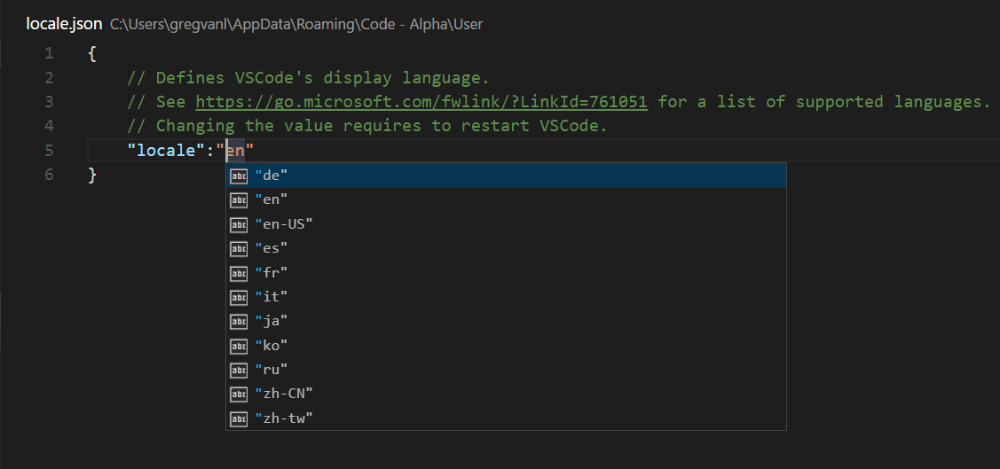

Visual Studio Code ships with 10 available display languages (locales): English (US), Simplified Chinese, Traditional Chinese, French, German, Italian, Japanese, Korean, Russian and Spanish. Localized display text for all 10 languages is included in the main VS Code download and as such, doesn’t require a secondary install.
By default, VS Code picks up the operating system’s display language, falling back to English (US) if the locale is not supported.
Available Locales
| Display Language | Locale |
|---|---|
| English (US) | en |
| Simplified Chinese | zh-CN |
| Traditional Chinese | zh-TW |
| French | fr |
| German | de |
| Italian | it |
| Japanese | ja |
| Korean | ko |
| Russian | ru |
| Spanish | es |
Setting the Language
If you want to configure a specific language, you can either use the command line switch --locale to specify a locale when you launch a VS Code session or use the Configure Language command to persist the display language to use when VS Code is started.
Below is an example of using the --locale command line switch to set the VS Code display language to French:
|
Configure Language command
The Configure Language command creates a locale.json file in your user VS Code folder. Set the locale attribute to your preferred locale.
Press ⇧⌘P (Windows, Linux Ctrl+Shift+P) to bring up the Command Palette then start typing “config” to filter and display the Configure Language command.

Press Enter and a locale.json file is created with the default value set to your operating system language. You can use IntelliSense (⌃Space (Windows, Linux Ctrl+Space)) to select a different supported language locale.

Save locale.json and restart VS Code to use the new display language.
The example below sets VS Code to display Simplified Chinese zh-CN:
|
You can rerun the Configure Language command to review and change your locale.json file.
Note: Changing the
localevalue requires a restart of VS Code.